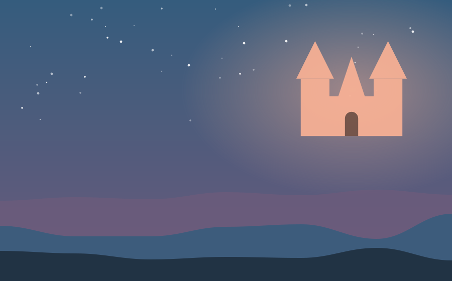

Chapter 1 of 1
A Jar for Every Storm

Once upon a time, in a castle made of pale blue stone, there lived a princess named Liora who loved storms. Her tutors told her that princesses should be soft as lullabies and quiet as snow. Liora tried. But whenever the sky rumbled, her heart rumbled with it.
One night, she sneaked onto the highest tower with a handful of empty jam jars. When the first thunderclap rolled across the hills, she lifted a jar and snapped the lid shut. Inside, something grumbled and glowed. By morning, she had twelve jars, each containing a different growl of the sky.
The next week, a dragon landed in the courtyard, hungry and furious, and every knight ran away. Liora stepped out alone, carrying her jars. She opened the first, and a mighty boom shook the cobblestones. The dragon froze. She opened a second, and the sound rolled like a drum. "I'm not afraid of you," said Liora, "but I am lonely, and you sound lonely too."
The dragon lowered its head. From that day, the princess and the dragon shared the tallest tower, and whenever storms came, they listened together. The kingdom learned that some of the bravest things are loud, and that a roar can be a kind of song.
— The End —